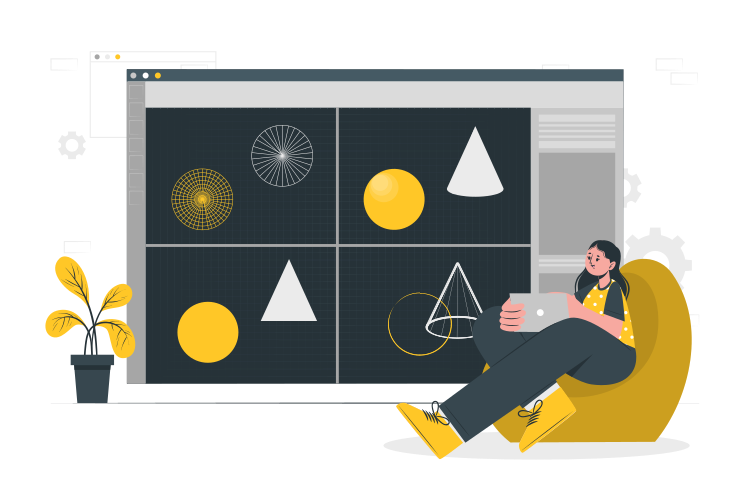

Desenvolvedor Back-end e DevOps.
Fale comigoDesenvolvedor Back-end e DevOps.
Fale comigo
Me chamo José Kauan, atualmente graduando no curso de Ciência da Computação na UFCG e desenvolvedor Back-end, com foco em se torna Full-Stack. Desenvolvo Sistemas simples de back-end, desde construções de APIs, Gerenciamento de DataBase até a parte de DevOps. Também trabalhando com suporte técnico e manutenção de computadore e instação de sistemas operacionais, se necessário. Ótima base matemática(com matemática contínua e discreta), coopreensão de Algoritmos e Estruturad de Dados.
Aprendizado constante...
O Back-end é o que está por de trás do que é visto em site, desde APIs a Banco de Dados. Conhecimentos em SpringBoot, MariaDB, API Rest, Node.
Essa já é a parte mais operacionais, voltada principlmente para colocar-se sistemas para produção. Conhecimentos: Git Pages, Vercel, Netifly.
O Front-end é o responsável por tudo que está visível numa aplicação, desde cores até animações. Conhecimento em Css, Js,TypeScript, Angular, React.
A tecnologia é algo que varia de profissional para profissional de acordor com cada necessidade. Tecnologias: Java, Python, Spring, Node, Ruby, Linux, Windows, DBeaver Databese, VS Code,
Caso tenha interesse em dá uma olhada mais a fundo, só baixar o Curriculo ;)
Versão em Inglês